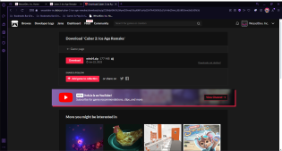

Cuber 2: Ice Age Remake
Home
About The Game
Cuber 2: Ice Age Remake is a remake of Cuber 2: Ice Age. Cuber 2: Ice Age Remake is a 2D platformer game with enemies shooting at the player and with ice but better.
The main goal is to get to the end of levels and jump into the portal. Side goals are killing the enemies via bombs and collecting coins to score points.
Where To Play The Game
Cuber 2: Ice Age is only played on Windows x64 bit. Extract the .zip file and in the folder run the nw file.
 Launcher